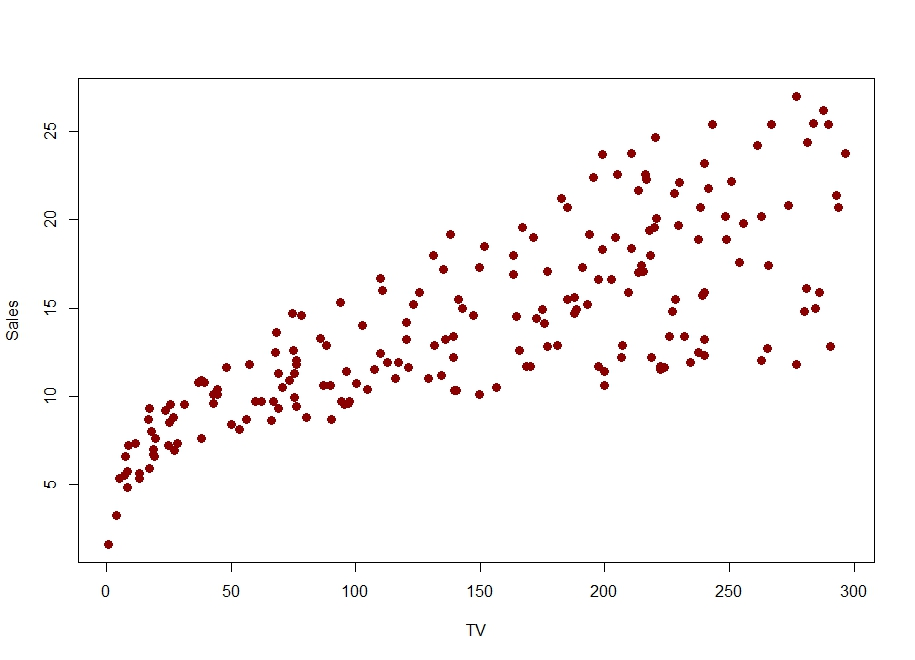
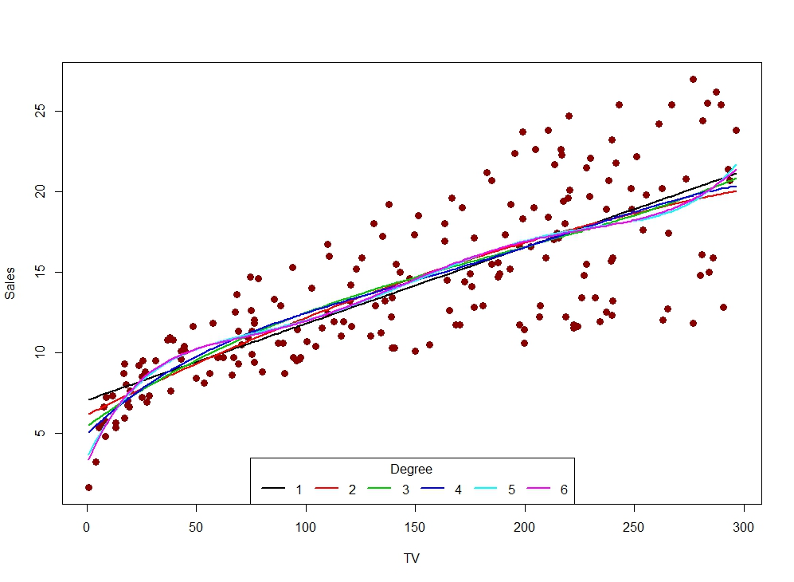
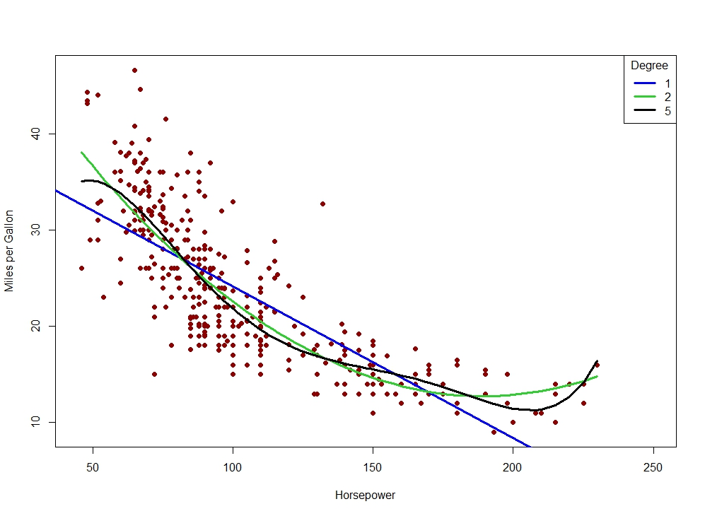

import pandas as pd
from sklearn.pipeline import Pipeline
from sklearn.linear_model import LinearRegression
from sklearn.metrics import r2_scoreMultiple Linear Regression
Introduction
This document demonstrates the use of the sklearn library in Python to do modeling via multiple linear regression.
Note
If you do not have the sklearn library installed then you will need to run
pip install sklearn
in the Jupyter/Colab terminal to install. Remember: you only need to install once per machine (or Colab session).
Machine Learning Mission
Recall that in machine learning our goal is to predict the value of some target variable using one or more predictor variables. Mathematically, we we’re in the following setup
[ y = f(X) + ]
where \(y\) is our target variable and \(X\) represents the collection (data frame) of our predictor variables. To predict \(y\) well we need to estimate \(f\) well. We will see many different ways to estimate \(f\) including those methods mentioned in our previous modeling introduction:
Linear Regression
k-Nearest Neighbors
Decision Trees
For the sake of completeness, the \(\epsilon\) in the equation above represents random error that is independent of \(X\) and has mean zero. Our focus will be on using our predictors (\(X\)) and good construction of our estimate of \(f\) to make accurate predictions of \(y\) for new data.
Simple Linear Regression
Our estimate of \(f\) will eventually take on very complicated forms, but one of the simplest estimates is a straight line using a single predictor:
[ y = _0 + _1 X_1 + ]
This is called simple linear regression and is an especially good place to start in our predictive modeling journey for many reasons, but in particular because our data and model are visualizable!
Consider the following data in which we’d like to, say, predict Sales from TV (i.e. the amount spent on TV advertising for a particular product).

Suppose we want to use a straight-line model to predict Sales from TV, i.e. fit a simple linear regression model to these data.
How do we use our data here to estimate the values of \(\beta_0\) and \(\beta_1\) in our simple linear regression model?
Recall that the vertical distance between a point and our simple linear regression model is called the residual for that observation (i.e. observed Sales minus predicted Sales).

Note
There are actually multiple ways to arrive at the estimates for \(\beta_0\) and \(\beta_1\), but in our machine learning context it’s most useful to think of using calculus (you don’t need to know this calculus) to find the values of \(\hat{\beta}_0\) and \(\hat{\beta}_1\) that minimize the sum of squared residuals:
[ _{i=1}^n (y_i - _i)^2 ]
where \(\hat{y}_i = \hat{\beta}_0 + \hat{\beta}_1 X_i\).
In your other linear regression-related experiences you may have been introduced to some technical conditions (assumptions) associated with fitting a linear regression model to data:
Linearity (the relationship between
yandxis indeed linear)Iindependence (of the errors)
Normality (of the errors)
Equal variance (of the errors)
Note
None of these technical conditions were necessary to do the calculus of finding the values of \(\hat{\beta}_0\) and \(\hat{\beta}_1\) that minimize the sum of squared residuals!
These linear regression models can be fit by simply minimizing an error metric (e.g. sum of squared residuals).
The technical conditions above are necessary if we want to do inference about the model and its coefficients. That is, if we want to run hypothesis test(s) about the significance of predictors or the values of their coefficients then the technical conditions need to satisfied.
Our course, and treatment of machine learning, will make use of other model evaluation techniques. So, for the most part, we will not worry about these technical conditions.
Polynomial Regression
One of the simplest ways to extend simple linear regression is to replace our straight-line model
[ y = _0 + _1 X_1 + ]
with a polynomial function
[ y = _0 + _1 X_1 + _2 X_1^2 + + _d X_1^d + ]
We can still estimate the coefficients with the least squares method described above for simple linear regression. Note that we’re still only using a single predictor variable here; we’ve added polynomial terms of that predictor variable. This can be useful if the relationship between y and x is not linear.
Note
Adding polynomial terms to our model is just one way to transform (and augment) our data set in a way that can improve our modeling and predictive efforts. In general, transforming variables in our dataset is a very common data wrangling strategy that can take place multiple times throughout modeling. The following are a few other ways variables can be transformed:
Standardize numeric variables (i.e. transformed to have mean 0 and standard deviation 1)
Dummifying categorical variables (i.e. creating 0-1 variables out of text variables so they can be used in a model)
Take
logof numeric variablesDiscretize/categorize numeric variables
Consider the following set of models fit to the Sales dataset from above:

Which model seems to fit the Sales data best? Why?
What is less good about the other models?
Let’s establish some official language for your answers to the previous question!
Underfitting
Underfitting is the scenario in which a model is unable to capture the relationship between the input(s) and the output variable accurately.
Do you think any of the models in Fig 3. are underfitting the data here? If so, which ones and why?
Overfitting
Overfitting is the scenario in which a model captures too much about the data its being trained on. That is, model is capturing the relationship between the input(s) and the output, but ALSO some of the noise or nuance present in the data.
Do you think any of the models in Fig 3. are overfitting the data here? If so, which ones and why?
Under/Overfitting and Our ML Mission
Remember that our goal is to estimate \(f\) in in a way that allows us to make accurate predictions for new data. In both the underfitting and the overfitting situations, we have model that will not generalize well (i.e. not make good predictions on new data), albeit in different ways. Use this idea about generalizability to comment one more time:

Which of these models are underfitting? Overfitting? Why?
Warning
In Python, all of our data wrangling and variable preparation (e.g. transformations) needs to happen in the creation of y and X before any models get fit.
For example, if we wanted to fit a degree 3 polynomial model to our data then we would need to create columns in X for the squared and cubic terms in our model:
X["x_sq"] = X["x"]**2
X["X_cube"] = X["x"]**3Multiple Linear Regression
It’s almost always the case that we have more than one predictor variable in our dataset. To estimate \(f\) in the best possible way we usually want to take advantage of everything we have access to. Extending our simple linear and polynomial regression models to this multiple linear regression model is straightforward!
[ y = _0 + _1 X_1 + _2 X_2 + + _p X_p + ]
where \(X_1\) represents the first predictor variable and so on. Coefficients are estimated in the same exact way! Minimize the sum of squared residuals:
[ _{i=1}^n (y_i - _i)^2 ]
but now \(\hat{y}_i\) is based on the multiple linear regression model above.
We just blew this regression modeling wide open!

Dummifying Categorical Variables
Unfortunately (?), sklearn in Python cannot handle character variables in our input dataset (X). We still want to make use of character-based, categorical variables in our modeling efforts. So, we’ll need to code or dummify them.
Suppose we have a character variable in our dataset with “Yes” and “No” values. This variable could be dummified by creating a new variable whose value is 1 if the original variable’s value was “Yes” and 0 if the original variable’s value was “No”.
In this case, the original variable had two distinct values (“Yes” and “No”), which required a single new variable to encode that information. For most of our modeling techniques this will be the case: we need n-1 new variables to encode the information from a variable with n distinct values.
Thankfully, there exist Python functions to help us dummify variables without having to do this by hand ourselves. There are at least two such functions:
OneHotEncoderin thesklearnlibraryget_dummiesin thepandaslibrary
Apply both the OneHotEncoder and get_dummies functions to the species variable in the Palmer Penguins dataset. Observe the results and discuss the differences, if there are any.
Standardizing Quantitative Variables
Data are not always nicely behaved. Many machine learning techniques greatly benefit from quantitative variables that do not contain extreme values and are nicely shaped. One way to help ensure this is to standardize our quantitative predictors of interest.
To standardize a quantitative variable means to subtract the mean from all values and divide by the standard deviation. The resulting variable will still contain useful information, but have been transformed to have mean 0 and standard deviation 1.
Thankfully, once again, there is a Python function that will assist us with this: StandardScaler in the sklearn library.
Apply the StandardScaler function to the bill_length_mm variable in the Palmer Penguins dataset. Observe the results. Did you overwrite the original variable or create a new one? If the former, are you able to get back to the original variable if you wanted to?